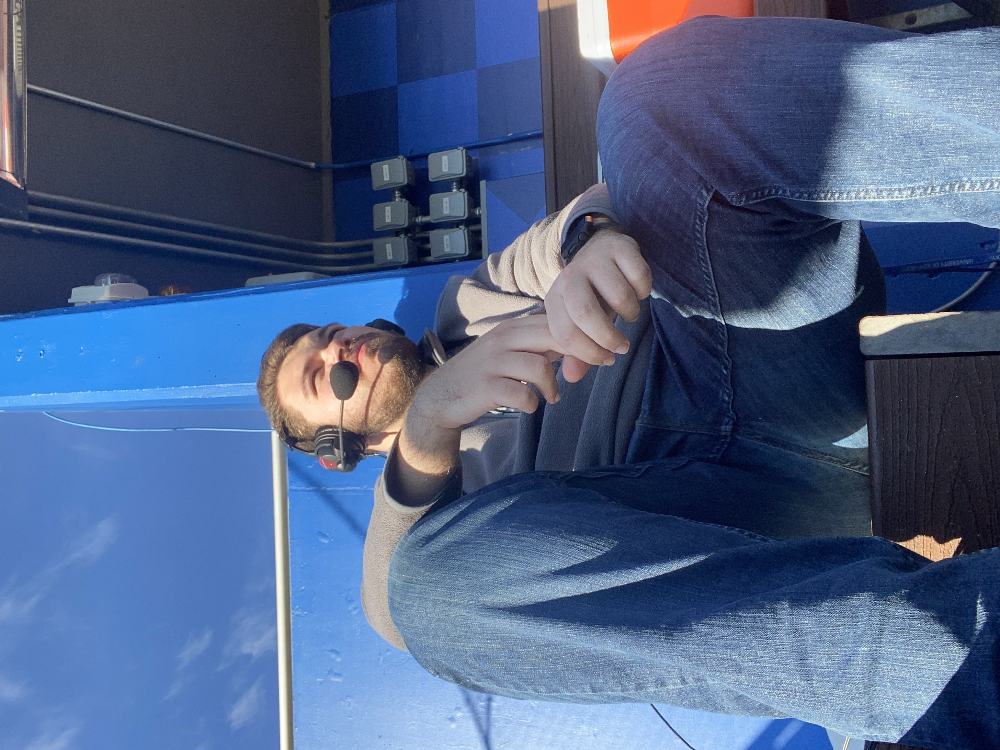

About Me!
My name is Cameron Shaw and I am an aspring video creator with experience in tv broadcast production. I am a May 2025 graduate of the University of Kentucky with a major in Media Arts and Studies and a minor in History.
During my time at Kentucky I took classes with focus in TV production, video production, and documentary production. Through these classes I learned valuable skills in the production process of non linear editing and live experience. I also learned skills in cameras such as the Sony a6600.
You can contact me at shawcd118@gmail.com.
